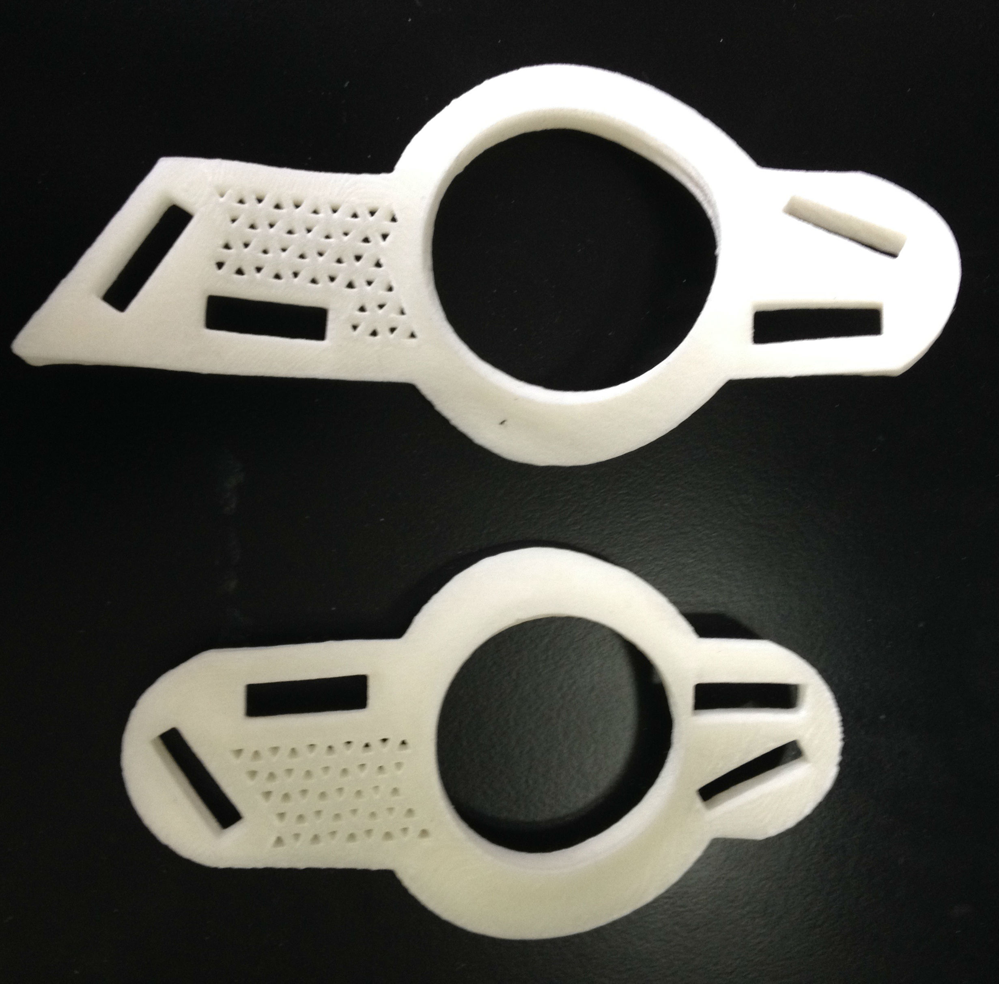

For my second work term I travelled to China to do research in biomechanics. I was hired by Dr. Yu Jia to design and 3D print an ankle brace. I was working independently on this project, with support from other co-op students designing different braces.
The purpose of the project was to design an ankle brace that could be customized to each patient. During production, each brace would be generated using medical CAD. This customization has the advantage of applying the necessary forces in a more accurate way.
The design of the brace first involved processing the MRI images using MIMICS. The resulting STL images of the ankle were then used to build a brace around it. The final result was two nylon stabilizers on either side of the ankle preventing inversion and eversion.
The final design of the brace is shown above. The pattern of triangular holes was implemented to reduce material to cut 3D printing costs, while maintaining structural integrity. The slots allowed for straps to be hooked into the brace, keeping it snug around the foot.
Working in China was an amazing experience. I saw as much as the country as I could and met many incredible people.